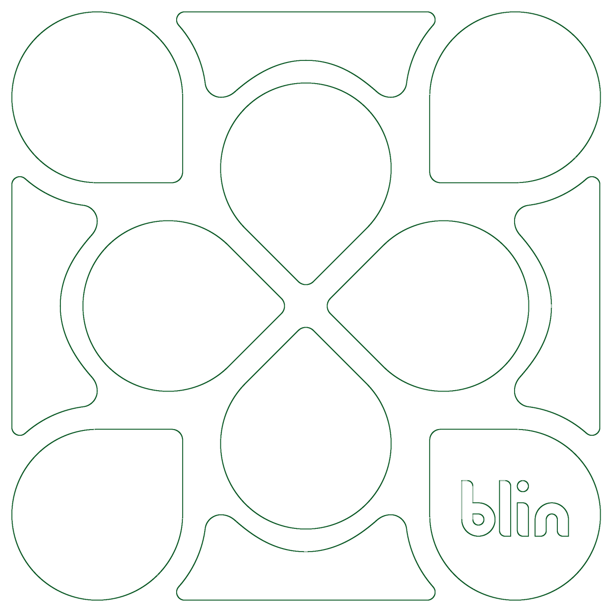

01
A gota da marca
virou o chão da cidade.
O tabuleiro repete o módulo da identidade em escala real. Quatro gotas formam a praça central, e os vazios entre elas viram ruas.
- Problema
- Marca e produto corriam o risco de parecer projetos separados.
- Escolha
- Usar a forma da marca como a geometria do próprio brinquedo.

Módulo da marca
Lote do tabuleiro